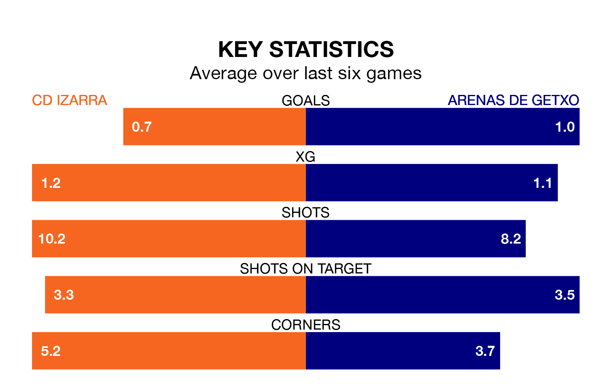

CD Izarra host Arenas de Getxo on Sunday at the Estadio Merkatondoa in the Segunda División RFEF Group 2.
In their last league match, on March 17, Izarra beat UD Mutilvera 2-1 at home, with goals from Endika Irigoyen Bravo and Mikel Arbeloa Aranguren.
Arenas de Getxo lost, 2-1 away at Athletic Club B on March 16, with Daiki Niwa scoring their goals.
In the last 10 years, Izarra and Arenas de Getxo have played each other on 10 occasions. Izarra won four of them, Arenas de Getxo three, and they drew three times.
On average, Izarra scored 1.4 goals and Arenas de Getxo 1.4 in those matches.
Their last meeting was on November 19, when Izarra won 2-1 away.
Izarra are 14th in the table after 27 games, of which they have won seven and drawn six, earning 27 points.
Arenas de Getxo are one place ahead of the hosts in 13th, with six wins and 11 draws putting them on 29 points.
With 24 goals in 27 games so far this season, Izarra are scoring at below the league average rate with 0.9 goals per game. And they are conceding more than average, letting in 38 goals at a rate of 1.4 per game.
The away team are also below average scorers, with 0.9 goals per game, compared to a league average of 1.1. They have conceded 1.1 goals per game.
Izarra are in mixed form in the Segunda División RFEF Group 2, with three wins and a draw from their last six games.
With three wins and two draws over that period, Arenas de Getxo's form is slightly better – they have taken 11 points from 18, compared to the home side's 10.
Updated: 10:19 (UTC), 22/03/24